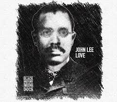

John Lee Love

John Lee Love foi um inventor afro-americano, mais conhecido por criar um dos primeiros apontadores de lápis portáteis. Em 1897, ele patenteou um design simples e eficiente, permitindo que estudantes, artistas e trabalhadores pudessem afiar seus lápis com facilidade. Sua invenção continua sendo a base para os apontadores modernos.
Principais Contribuições
- Patenteou um dos primeiros apontadores de lápis portáteis.
- Seu design influenciou os modelos de apontadores que usamos até hoje.
- Também trabalhou em melhorias para equipamentos de construção.
- Seu legado mostra como inovações simples podem ter um impacto duradouro.
Saiba mais
Voltar